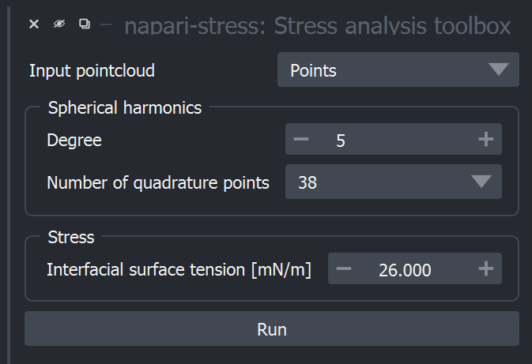

Comprehensive stress analysis
Contents
3.6. Comprehensive stress analysis#
To provide a means for easy, comprehensive analysis of reconstructed droplet data, napari-stress provides the stress analysis toolbox. As example data, you can use the 4D example dataset of a reconstructed pointcloud (File > Open Sample > napari-stress > 4d Droplet pointcloud):

3.6.1. The stress toolbox#
Open the stress toolbox from the plugins menu (Plugins > napari-stress > Stress analysis toolbox):

The settings require the following input:
Input pointcloud: Layer of a reconstructed droplet. Can be 3D or 4D.Degree: Degree of the spherical harmonics expansion fitted to the pointcloud. The higher the degree, the better the fit. For mor details, see glossary.Number of quadrature points: Number of points on which curvature will be evaluated.Note 1: High values (>1000) can lead to signiicant computational expense on first time run.
Note 2: Using high-order spherical harmonics requires a specific minimal number of quadrature points. The number of quadrature points can be higher than this number, but not lower.
Interfacial surface tension [mN/m]: Surface tension in mN/m of the evaluated droplet.
3.6.2. Analyzing the output#
The toolbox creates a number of layers when finished, some with attached features that can be displayed using the feature visualization utilities from napari-stress. These include:
Result of fit spherical harmonics: Result of the spherical harmonics expansion. Contains thefit_residuesfeature which denotes the residual distances between the raw points and the input points.
Result of expand points on ellipsoid: Result of the least-squares ellipsoidal fit. Contains thefit_residuesfeature which denotes the residual distances between the raw points and the input points.
Result of least squares ellipsoid: Vectors layer that visualizes the major axes of the fitted ellipsoid.
Result of lebedev quadrature (droplet): Result of the lebedev quadrature point determination. Contains themean_curvature(\(H_i\)),anisotropic_stress_cell(\(\sigma^A_C\)) andanisotropic_stress(\(\sigma^A\)) features.
Result of lebedev quadrature on ellipsoid: Result of evaluating the determined quadrature points on the corresponding locations on surface of the previously determined least-squares ellipsoid. Contains the featureanisotropic_stress_tissue